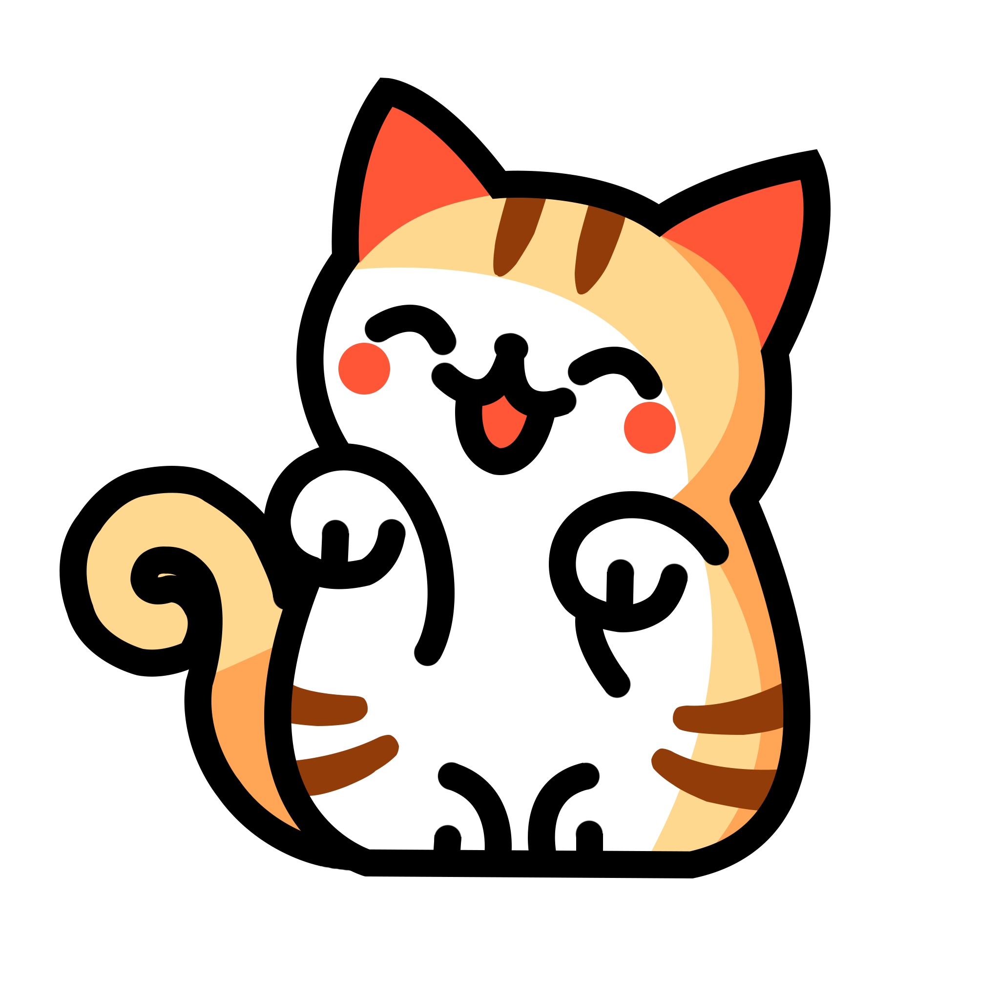

Chào mừng bạn đến với Trắc nghiệm Đọc Kanji

Chào mừng bạn đến với Neko Kanji Quiz - nơi bạn có thể thử thách và củng cố kiến thức về chữ Hán cùng các cách đọc của chúng. Bài kiểm tra mang lại trải nghiệm vừa vui vẻ vừa bổ ích giúp nâng cao trình độ tiếng Nhật.
Mọi thắc mắc hoặc góp ý cho tác giả gốc, bạn có thể liên hệ:
Twitter: @goshintai_
Discord: osha420